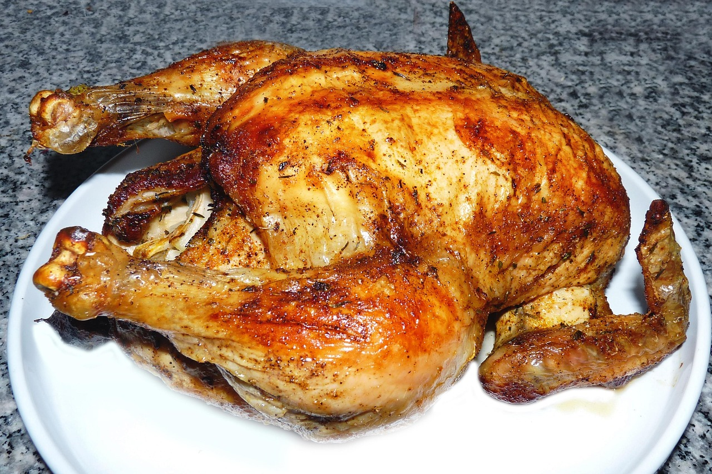

Home
How to make Chicken Oregano

Description
Chicken Oregano is a Mediterranean-inspired dish where chicken is seasoned with oregano, garlic, and lemon, then simmered or baked until tender. The result is a flavorful, aromatic meal often served with rice, potatoes, or fresh salad.
Ingredients
- 4 chicken thighs or breasts (bone-in or boneless, skin optional)
- 3 tbsp olive oil
- 3 cloves garlic, minced
- Juice of 1 lemon (about 2 tbsp)
- 2 tsp dried oregano (or 1 tbsp fresh oregano, chopped)
- 1 tsp dried thyme (optional)
- 1 tsp paprika (optional, for color)
- Salt & black pepper to taste
- ½ cup chicken broth or water
- Lemon wedges & fresh oregano for garnish
Steps:
- Prepare the chicken:
- Pat chicken dry with paper towels.
- Season both sides with salt, pepper, oregano, thyme, and paprika.
- Sear the chicken:
- Heat olive oil in a skillet or pan over medium-high heat.
- Add chicken and sear for 4–5 minutes on each side until golden brown.
- Remove and set aside.
- Make the sauce:
- In the same pan, add garlic and sauté for 30 seconds.
- Deglaze with chicken broth and lemon juice, scraping up brown bits from the pan.
- Simmer:
- Return chicken to the pan.
- Lower heat, cover, and cook for 15–20 minutes (until chicken reaches 165°F / 74°C internally).
- Serve:
- Spoon sauce over the chicken.
- Garnish with lemon wedges and fresh oregano.
- Serve with roasted potatoes, rice, or a side salad.